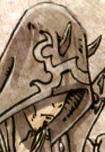

Forums galactiques > Taverne galactique : lieu de discussion informel > recrutement
Pages : 1
| Sir Agone Réputation à la taverne : 0  20/08 ETU 20:05 | Score : 0 Détails cher commandants, commandantes,
l'Armée des Sans Vies recrute des commandants experimentés ou non. La seul chose que nous voudrions savoir est votre determination a avancer ds le jeu et bien sur, si vous etes prés à faire en sorte que la coalition prospère... veuillez repondre au commandant Ash ou a moi meme Sir Agone par MP. Merci d'avance pour votre colaboration. cordialement, Sir Agone | ||
| Sir Agone Réputation à la taverne : 0 23/08 ETU 13:14 | Score : 0 Détails L'armee des sans vies
Description: Nous faisons adherer les nouveaux commandants dans cette coalition. Nous avons pour bu de les former et de grandir avec eux. Car lorsque l'on est encore debutant, nous sommes des sans vies. Car par rapport aux grands, nous ne valons rien. Nous invitons tout ceux qui veulent trouver une coalition et qui veulent apprendre a attaquer et a se defendre. Nous deviendront l'armee des sans vies, car nous ne sommes ni vivants, ni morts. Juste des ames errantes cherchant a se faire connaitre. Constitution: Nous sommes deux dirigeants dans cette coalition. Un pour gerer les admissions, l'autre pour donner des cours. Nouveaux, venez nombreux. |
Pages : 1
Forums galactiques > Taverne galactique : lieu de discussion informel > recrutement